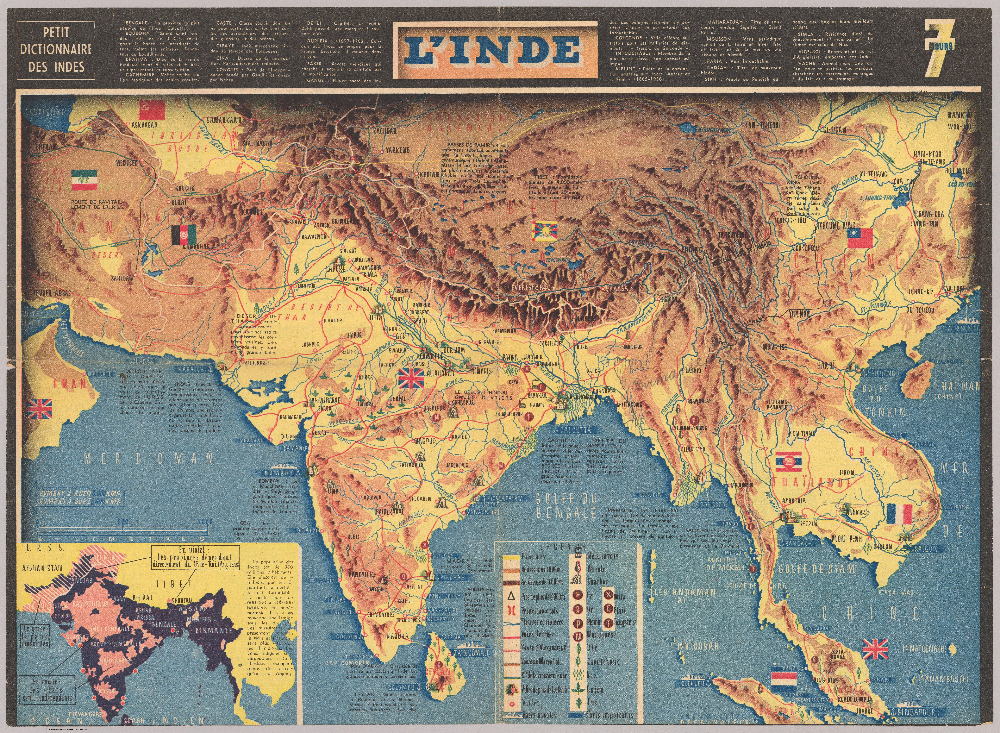
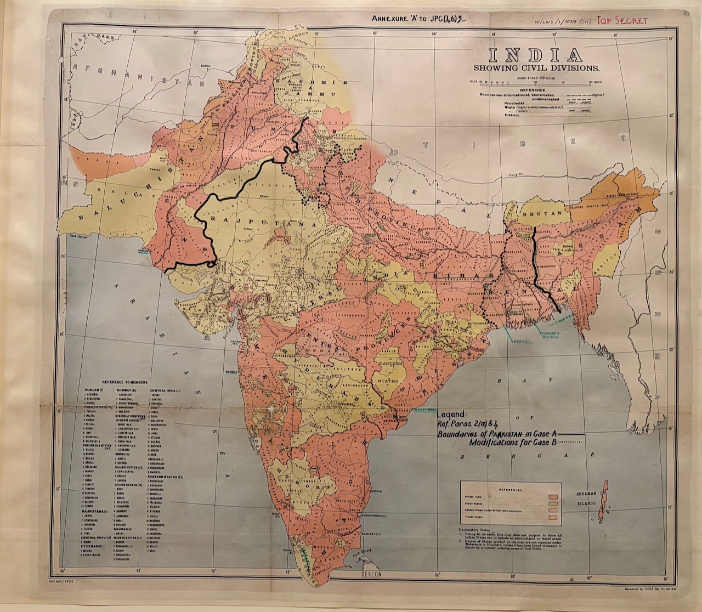

The European Gaze on India
1519 – 1946
About
Theme
← All rooms
Room 07
Last Frontiers
General Map of Central Asia and Tibet
1922

L'Inde. Jac Mercier. Dessinateur
1942

India Showing Civil Divisions — Boundaries of Pakistan (Case A / Case B)
1946
Carta demográfica do Estado da Índia Distrito de Goa
1946
Where Pakistan and India Come Face to Face — the Punjab
1947